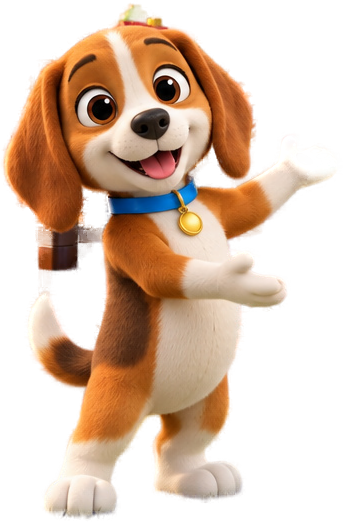
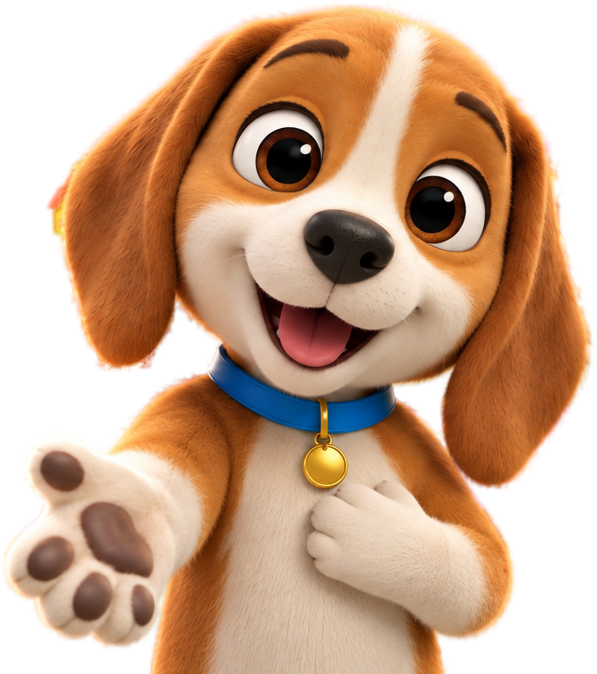

Klockowo — nowy wygląd · makieta do akceptacji
Тла — ваші фото, персонажі вирізані з них. Кнопки й плитки — глянцеві «цеглинки». Логіка гри не змінюється: ті самі екрани, кнопки й порядок.
Кадри масштабуються під ширину вікна; на телефоні буде своя (вертикальна) розкладка тих самих елементів.
1 · Start Kubik вітає, велика кнопка «Graj!», вибір мови
2 · Twój piesek дитина обирає цуценя з команди; обране — з галочкою (не лише кольором)
Wybierz swojego pieska!

3 · Łąka Liczenia — mapa рівні — цеглинки на доріжці; пройдені з зірочкою, поточний — Kubik
4 · Gra «Policz i dotknij» фон розмитий, щоб предмети читались; плитки-відповіді — цеглинки з цифрою й крапками
⌂
🔊?

Policz kaczuszki. Ile ich jest?
5 · Przerwa — piosenka «Kubik liczy do dziesięciu» натисніть ▶: картинка й текст змінюються за куплетами (точні моменти підлаштуємо на слух)
6 · Koniec poziomu святкування з кульками; далі — ті самі кнопки, що й зараз
7 · Kosmiczna Droga (W7) той самий інтерфейс у космосі: фон, Kubik-космонавт, світні плитки

Pięć tu świeci, pięć tam świeci. Ile razem?
Kubik, цуценята, качка й каченята — вирізані з ваших фото. Кожен екран адаптується під телефон, а все, що працює зараз, лишається.